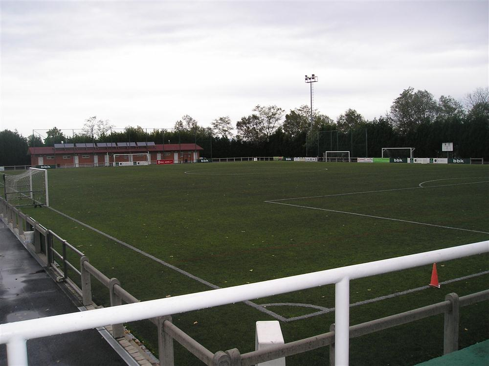
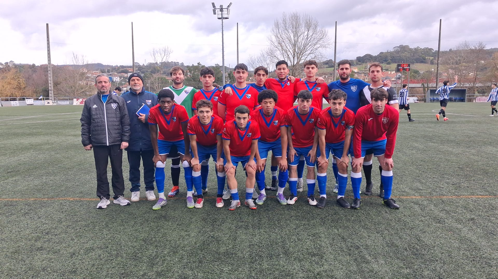
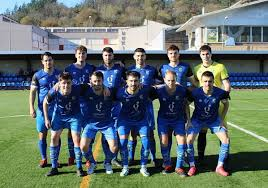
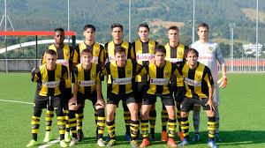

EFF
EUSKAL FUTBOL FEDERAZIO
Euskal Herriko Futbol Ligak bere lehen denboraldia arrakastaz amaitu du, zaleei maila handiko futbola eta partida zirraragarriak eskainiz. Denboraldian zehar, taldeek euren taktika, koordinazioa eta grina erakutsi dute, eta azken jardunaldira arte ez zen erabaki nor izango zen garailea.
Ligak ez du bakarrik lehen postuak eta golak azpimarratu; talde txikiek eta gazteek ere euren lekua aurkitu dute, euren talentua erakutsiz eta etorkizuneko izarrak sortuz. Defentsa sendoak, eraso koordinatuak eta lan taldekoak izan dira garaipenak lortzeko giltzarriek.
Zaleek giro aparta sortu dute estadio guztietan, eta ligak ez du bakarrik kirola sustatu; komunitatea eta euskal identitatea indartu ditu. Lehen denboraldi honek erakutsi du ligak etorkizunean indartsuagoa eta zirraragarriagoa izango dela, futbola eta gazteen talentua hazteko aukera paregabea eskaintzen jarraituz.

SD Moraza, aurreko denboraldian Champions League trofeoa irabazi zuten.

SD Umore ona, aurreko denboraldian Kopa irabazi zuten

CD Basconia, aurreko denboraldian liga irabazi zuten